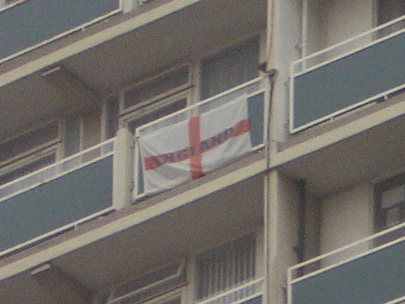
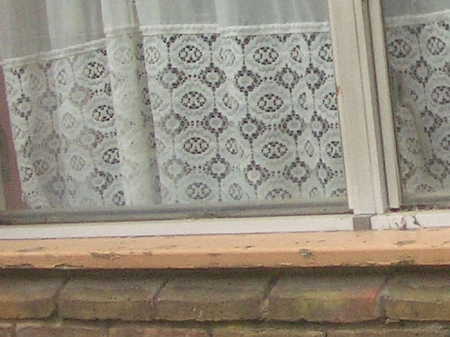
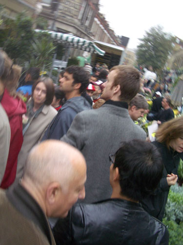
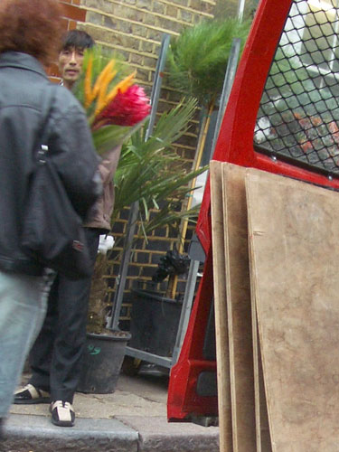
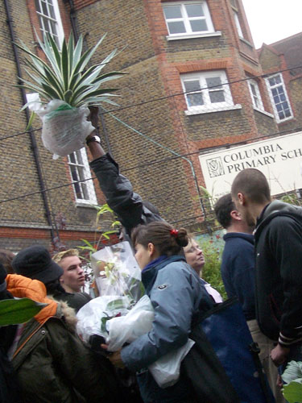
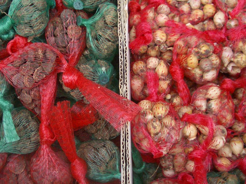
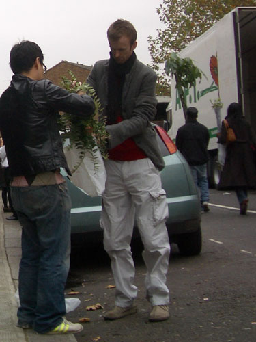
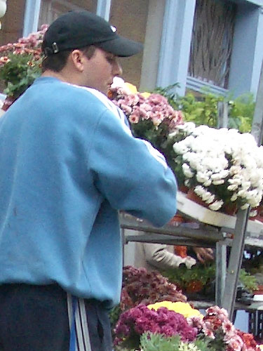

| < | > |
| Columbia Road | [2004-11-11 00:00] |
| Dai has been trying to share with me his enthusiasm for the Columbia Road Flower Market for sometime. I knew it would appeal to João, so I just kept on saying "mmm yes sometime" and waited for a Sunday when João could go.  For me the East End is a forbidden zone. I rarely go there, and only for good reason. It's ugly, decrepit and cramped. When we got out of the Tube at Old Street the raw smell of vinegar in the street told me everything I needed to know.  But I was in a good mood. Today could happily be an exception. João knew where he was going, carefree I followed him. We'd meet Dai and Adrian (Dai's ex) at the market. That's them below: João bottom left, Dai in black leather, and Adrian (all 6 ft 7 ins of him) in grey.  João had a fond hope we would buy something, but I doubted it. This was a reconnaissance. While the purchasers evaluated, I flitted about indulging in random covert photography. This lone chinaman was selling bootleg DVDs.  I don't even remember seeing this, but I photographed it.  Somehow the bulbs seemed more enticing than the plants.  Dai has been coming here each Sunday for the past nine weeks. He calls it his church. His room is now filled with something like 19 plants. By contrast everything Adrian bought died. "You have to use more plant food!" was the exasperated master's solution.  I formed an idle inclination to grow chrysanthemums, like Shen Fu in Six Records of a Floating Life. In a big pot with huge gleaming white heads. Maybe one day it will happen.  This young man sounded like this. Afterwards we all went down Brick Lane and ate bagels. Then on through Spitalfields looking at glad rags. All the while I never realized I'd run out of memory. I enjoyed this little jaunt into the forbidden zone. I wonder how long before I go back? |
|